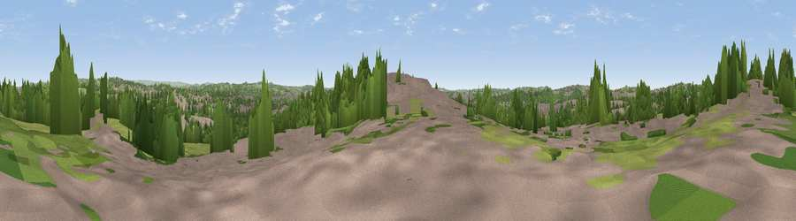

Viewpoint near Tunstall
#33447 in England · top 62% of its area beats it · near TunstallWhere it is
The exact computed spot (SJ 87375 51625). Click the marker for map links.
The view, rendered

A 360° render of this exact spot computed from the terrain model, tree cover and land cover — summer colours, afternoon light, calibrated against photographs of famous viewpoints. Real trees, hedges and buildings will differ in detail.
The panorama
Grey silhouette: terrain skyline in each direction (720 bearings, Earth curvature and refraction included). Dashed green: skyline with trees (+15 m) and buildings (+8 m) as obstacles. Blue strip: how far the ground is visible on each bearing.
Where the view opens
Wedge length = distance to the farthest visible ground on that bearing (vegetation-aware). Rings at 10, 25 and 50 km.
What fills the view
35% built-up · 33% woodland · 31% grassland ·
Angular shares of the visible panorama (visual magnitude), not map area. Landscape diversity 0.49 (0–1 Shannon).
Key numbers
More beautiful places nearby
The staircase of upgrades: each row has a higher view potential than everything closer. Driving times are estimates from straight-line distance, calibrated against real road routing — check an actual route before setting out.
| Place | Direction | Drive | Score |
|---|---|---|---|
| Viewpoint near Norton-Le-Moors | NE · 2 km | ~4 min | 41.0 |
| Sneyd Hill | SSE · 2 km | ~5 min | 49.9 |
| Forest Park Viewing Point | SSE · 3 km | ~7 min | 55.0 |
| Ashenough Hill | WNW · 4 km | ~9 min | 66.0 |
| Viewpoint near Talke | WNW · 5 km | ~11 min | 67.7 |
| Bignall Hill | W · 5 km | ~11 min | 75.2 |
| Viewpoint near Mow Cop | NNW · 6 km | ~13 min | 80.2 |
| Viewpoint near Harthill | W · 36 km | ~55 min | 80.5 |
53.06172, -2.18984 · source: screening · position refined by local search. Computed location — check access rights before visiting.